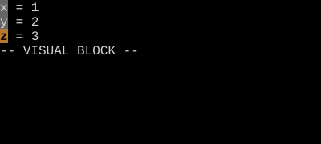
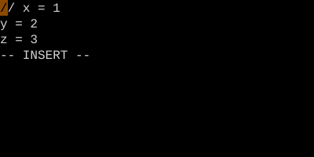

Block Comment with Ctrl-V + I
Add a comment marker to N consecutive lines.
Ctrl-V to enter block visual, j or count+j to select rows, I to insert at left edge, type the comment marker, Esc — the marker appears on every line.
Block Comment
Vim has no built-in "comment this block" command — but block-Visual + capital-I gives you a one-trick replacement that works in any language.
| Key | Note |
|---|---|
| Ctrl-V | Enter block Visual |
| 4j | Extend down 4 more lines (5 total) |
| I | Insert at left edge of block |
| // | Type the marker |
| Esc | Marker appears on all 5 lines |
Uncomment
| Key | Note |
|---|---|
| Ctrl-V | Block Visual |
| 4j | Down 4 lines |
| lll | Right 3 columns to cover "// " |
| d | Delete the rectangle |
Worked example — Ctrl-V jjj I//<Esc>
Block-prefix many lines at once.


The trick: in block-Insert mode, the typing only shows on row one until you press Esc.
Watch
- 📺 #0467 :%norm I// — Comment All Lines (not yet published)
- 📺 #0467 :%norm I// — Comment All Lines (not yet published)
See also: Block Insert and Append, The Three Visual Modes